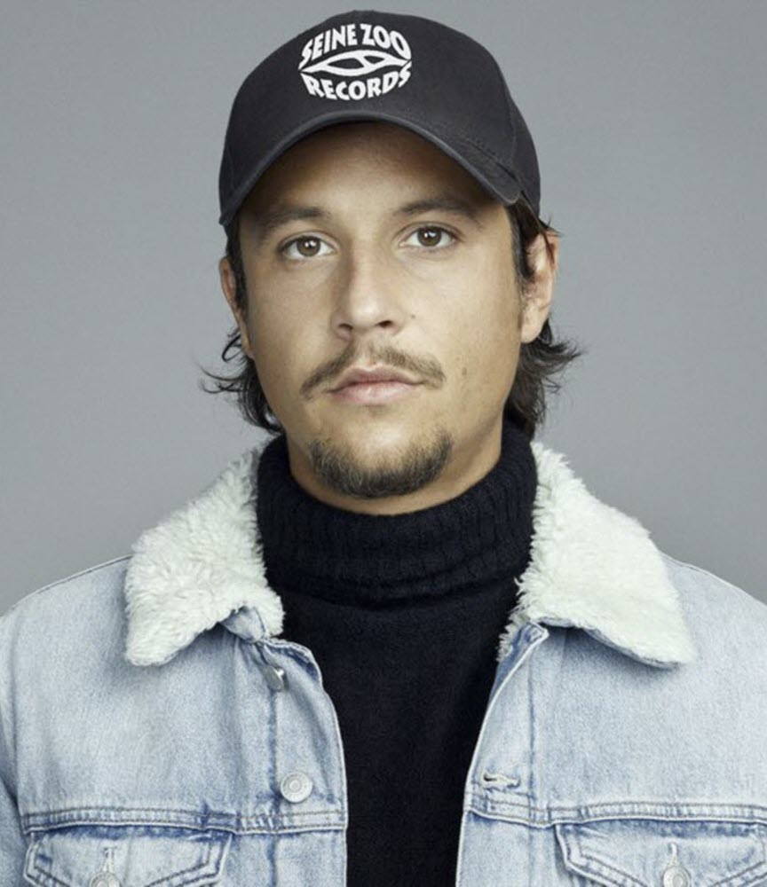

Recently, SCH has been quoted the man of the year for French rap. and That’s not false. But Paris organized to rob the last weeks of 2020. The person in charge of this flash hold-up? Nekfeu. After more than a year of almost musical and media silence, the Parisian rapper went back down to Earth to put our ideas straight and remind us that he is still there. So, we’ll go back to Nekfeu and what exactly did he do. Nekfeu is a Parisian rapper who was part of several musical collectives such as: Blackbird, L’entourage, S-crew or 1995. It is in these groups that Nekfeu will meet his friend rappers with whom he still rapes today as alpha Wann for example. As soon as he appeared Nekfeu will be one known as one of the best writings in French rap, which will greatly boost his career. Now we can see how Nekfeu reappeared in French rap. In just one month, he delivered no less than six collaborations: first a “Turn Up sauvage” on the Kalash Criminal album, then “Moins UN” on Stamina by Dinos, but above all, four surprise appearances on the Don Dada mixtape Vol. One from his buddy Alpha Wann. With the recent statements of Laylow and K.S.A, we knew that this project promised great things, but this one, on the other hand, we didn’t see it coming.
The return of Nekfeu is more a buzz since he left us in a bad mood. Indeed, with Les Etoiles Vagabondes and his Expansion, he delivered a double introspective album in which he let express a certain melancholy and a deep sadness. In the eponymous film, we did discover a Nekfeu at the end of its breath, and visibly tested by the pressure of fame. The conclusion was clear: he suffered the full force of the other side of the coin of his status as the greatest star of contemporary French rap. So, he needed to step back and find himself. As soon as we can, we leave because we suffocate," as he recalls so well in his verse on Malevil.
It is also for this reason that the rapper successively cut all his social networks at the end of 2019. First Twitter, then Instagram, then radio silence on Facebook and deletion of its YouTube channel in April 2020. While many fans were already imagining a new marketing strategy to announce something new, others found nothing better than spreading false rumours that Nekfeu was putting an end to his career. Neither vision was right. It was obvious that the rapper wanted to slip away to find a little calm and breathe after the emotional storm that was for him "Les Etoiles Vagabondes". Leave to return better, as they say, and we hope that is true!
The return of Nekfeu is more a buzz since he left us in a bad mood. Indeed, with Les Etoiles Vagabondes and his Expansion, he delivered a double introspective album in which he let express a certain melancholy and a deep sadness. In the eponymous film, we did discover a Nekfeu at the end of its breath, and visibly tested by the pressure of fame. The conclusion was clear: he suffered the full force of the other side of the coin of his status as the greatest star of contemporary French rap. So, he needed to step back and find himself. As soon as we can, we leave because we suffocate," as he recalls so well in his verse on Malevil.
It is also for this reason that the rapper successively cut all his social networks at the end of 2019. First Twitter, then Instagram, then radio silence on Facebook and deletion of its YouTube channel in April 2020. While many fans were already imagining a new marketing strategy to announce something new, others found nothing better than spreading false rumours that Nekfeu was putting an end to his career. Neither vision was right. It was obvious that the rapper wanted to slip away to find a little calm and breathe after the emotional storm that was for him "Les Etoiles Vagabondes". Leave to return better, as they say, and we hope that is true!
